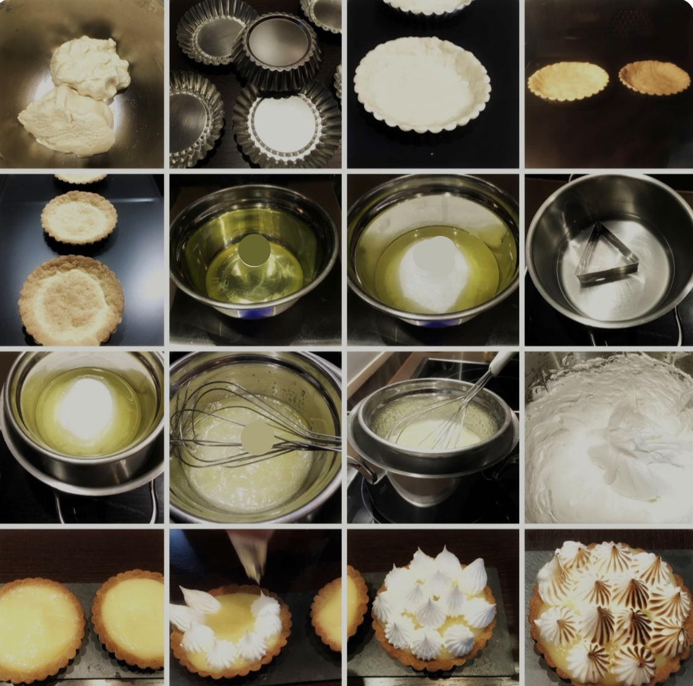

Ingredientes
Ingredientes para la masa
- Harina 0000 260 gr
- Azúcar impalpable 45 gr
- Manteca pomada 125 gr
- 1 huevo
Ingredientes para el lemon curd
- 200 ml de jugo de limón
- 300 ml de agua
- 50 g de Maizena
- 3 yemas
- 180 g de azúcar
- 40 g de manteca
Ingredientes para el merengue
- 3 claras
- 130 g de azúcar
- 1 cucharadita de zumo de limón
Paso a paso
- Prepara la masa quebrada. Tamiza la harina a través de un colador para evitar que tenga grumos. Añade el azúcar y mezcla. Añade el huevo y la mantequilla fría. Mezcla con la espátula y, luego, con las manos. Poco a poco se irá integrando y quedará una masa muy fina.
- Enfría la masa. Envuelve la masa en film de cocina y aplasta con las manos para que luego sea más fácil estirarla. Guárdala en la nevera hasta que esté bien firme al menos media hora.
- Prepara la crema de limón. Pon las cinco yemas y el huevo entero en un bol y añade el zumo de limón. Incorpora el azúcar y la maicena. Bate hasta integrar todos los ingredientes durante un minuto. Incorpora la nata caliente cuando los huevos hayan espumado. Incorpora poco a poco y a la vez que vas batiendo. Calienta la crema en una cazuela al fuego. Espera a que se caliente sin dejar de remover hasta que arranque el hervor. Apaga el fuego e incorpora la mantequilla. Mezcla hasta que funda por completo. Cuela a través de un colador y presiona hasta que pase toda la crema por el colador. Deja que enfríe a temperatura ambiente con un film de cocina en contacto con la crema. Guárdala luego en la nevera.
- Precalienta el horno a 200 grados con calor arriba y abajo y sin aire.
- Extiende la masa sobre el mármol. Espolvorea un poco de harina sobre la mesa y coloca la masa encima. Espolvorea harina encima de la masa y extiende con un rodillo hasta obtener un grosor de aproximadamente medio centímetro.
- Hornea la masa. Ayúdate del rodillo para transportar la masa dentro del molde. Enrolla la masa sobre el rodillo y colócala sobre el molde. Yo he utilizado un molde de 24 centímetros de diámetro. Adapta bien la masa en el molde dándole un poco de holgura. Corta la masa con el rodillo y retira el exceso. Pincha la masa con un tenedor. Pon papel de aluminio encima y unos garbanzos así evitarás que la masa se infle. Hornea a 200 grados con calor arriba y abajo durante 15 minutos aproximadamente.
- Prepara el merengue. Pon el azúcar en un cazo al fuego y añade agua hasta que moje bien el azúcar. Mueve de vez en cuando y tendrás el almíbar listo cuando aparezcan pompas grandes. Pon todas las claras en un bol y añade una cucharada de zumo de limón. Monta con una batidora de varillas hasta que dibujen trazo. Añade el almíbar por el borde y ve integrando así poco a poco. Bate de nuevo hasta que las claras estén muy brillantes y de un color blanco intento.
- Monta la tarta. Desmolda la base del molde. Pon cucharadas de crema de limón en la base y extiende con la misma cuchara intentando que no queden burbujas. Alisa la superficie. Pon el merengue en una manga pastelera y haz montañitas encima de la crema. Acaba la decoración con el soplete.
